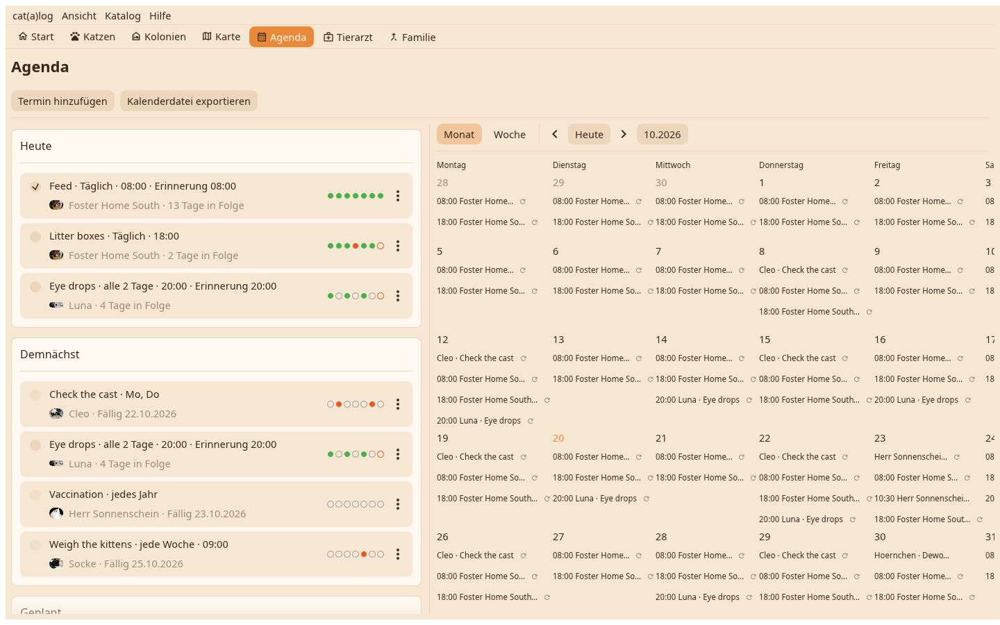

Die Liste links, ein Kalender rechts: ein Monat aus Zellen oder eine Woche aus Stundenspalten, geöffnet bei jetzt. Die Liste zeigt weiter alles Geplante, was auch der Kalender zeigt.

Täglich, alle so viele Tage, an Wochentagen oder einmalig mit Fälligkeit; eine Uhrzeit und eine Erinnerung, die als Desktop-Benachrichtigung mit der Stimme der Katze spricht. Das Kästchen hakt ab, Serie und Wochenpunkte folgen, eine Aufgabe wird aus ihrem Editor auf eine andere Katze dupliziert.
Das Plus legt einen Termin, eine Erinnerung oder eine Aufgabe an. Eine Tierarztfahrt mit mehreren Katzen ist eine Karte; Abschließen fragt, welche behandelt wurden. Der ICS-Knopf schreibt eine Kalenderdatei für deinen Desktop-Kalender.